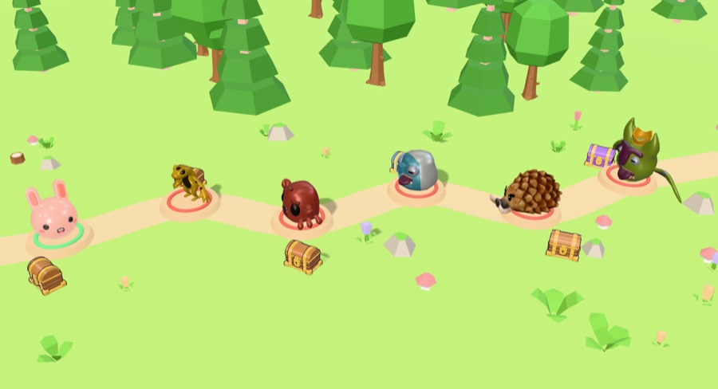
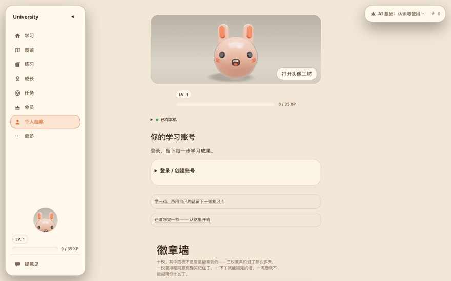
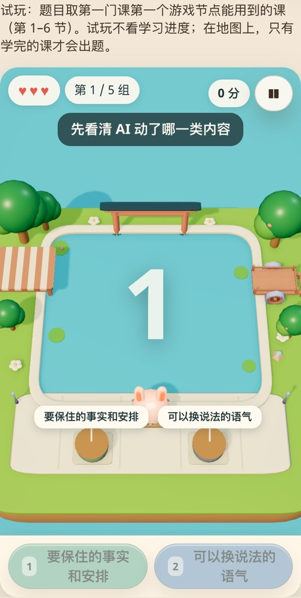
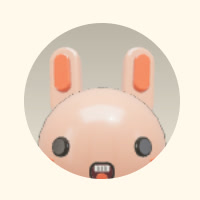
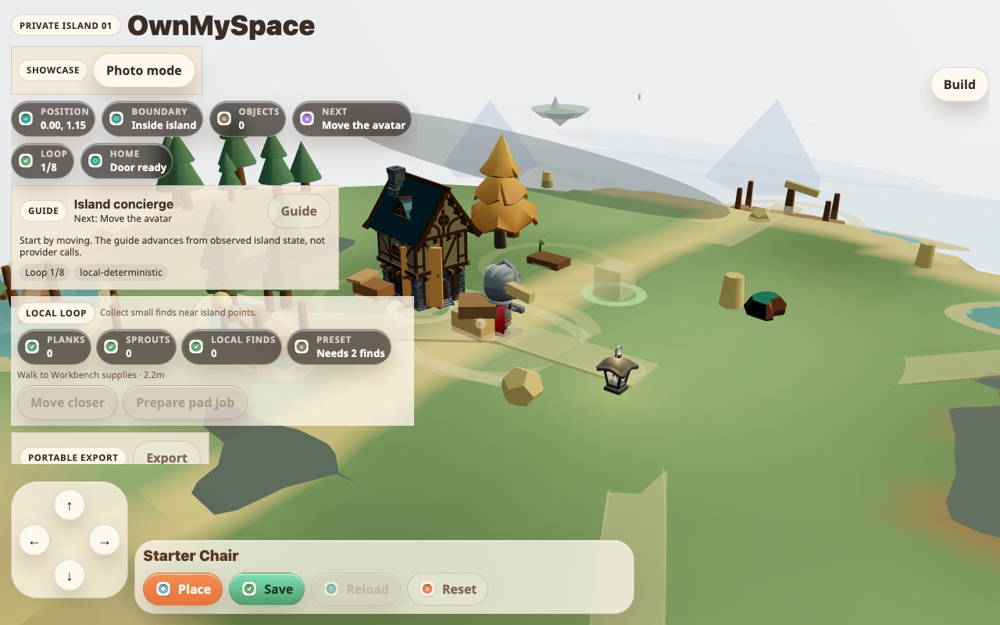

让人一门一门学下去：升级、血量、装备、道具，和一座两个产品共用的岛
你想用游戏的办法，让学的人一直学下去、去学各种各样的课；还想让 University 和 OwnMySpace 连成一个生态：学习得来的东西，能摆到自己在 OwnMySpace 的岛上。这一份先看清两边已经有什么，再说我的建议，最后是要你拍板的事。
这份报告怎么读
还是那位虚构的学员「小林」。这次跟着她学完第一门课、打开宝箱、上岛玩游戏，最后走进 OwnMySpace 里自己的岛。
每一站都按同样的五步来讲：
- 现在是什么样：真实截图，红色数字告诉你看哪儿。
- 小林会怎么想：一个学员的第一反应。
- 问题出在哪：一句话说清。
- 建议改成这样：新样子的说明和草图。
- 为什么：打个比方，再讲道理。
最后有 7 件事要你拍板，点一下就行，底部生成一行字，复制发给我。
小林（虚构）。35 岁，公司行政，想学会用 AI 干活。每天通勤 10 分钟用手机学。小时候玩过《摩尔庄园》，也在 QQ 农场里偷过菜。
如果你只有一分钟
- 第 7 版已经做了大半：经验和等级、四种宝箱、图鉴卡、段位、徽章、每周大怪、只出装扮的卡包、衣橱。新设计全部接在它上面，不另起一套。
- 升级：等级照旧，再加一层「本事星级」。每一关教一个本事，在别的课里再用上一次，这个本事就多一颗星。想升星，就得去学别的课。
- 血量：只放在岛上的游戏和每周大怪里，课里永远不扣。心的上限由「记牢了多少张卡」决定；游戏里掉光了，复习一张快忘的卡就回一颗心。
- 装备和道具：装扮只好看（第 7 版已有）；另加 6 件「工具」，本事练到三星才拿得到，只在岛上的游戏里帮你一把。宝箱里拿到的摆件，放进你自己的「家园岛」。
- 生态：家园岛就是你在 OwnMySpace 的那座岛：同一个账号、同一只小兔子、同一份摆件清单。University 里能摆、能看；到了 OwnMySpace 能改地形、用 AI 生成东西、去朋友岛上串门。
- 有一条要你先定：OwnMySpace 现在被总部排在「慢线」，不许任何 AI 在那边做收费相关的事。「会员送岛」碰的正是这条线，要你决定改不改排期。
从头读完大约 25 分钟。
先对一遍：你的意思，我是这样听懂的
都是你 9 月 30 日说的。听错了，告诉我第几条。
- 1用游戏的方式，让人一直学各种课，游戏里让人玩下去的好东西都学过来。第 0、1 站：先看第 7 版已经有的，再补「学别的课」的理由。
- 2升级系统，可能需要血量。第 2 站。血量我建议要，但放的位置有讲究。
- 3装备：现在小兔子装备不上，不知道怎么设计。第 3 站：分成「好看的装扮」和「有用的工具」两种。
- 4道具：第 7 版的宝箱会爆战利品，放到哪儿，是不是就是道具系统。第 4 站：是。东西分四类，各有去处。
- 5和 OwnMySpace 联合：宝箱里的家具、房子，能摆到自己的岛上；付费用户有一座漂亮的岛，两边是同一座。第 5 站。
- 6两个产品形成生态，产品线打通，后端本来就能通。第 5 站和「先后顺序」。账号能通；小人和岛的格式还要对齐，已经查过两边的代码。
- 7顺便想想 OwnMySpace 下一步怎么做得牛。第 6 站。
已经定下的，这份照着做
有的是你拍板的，有的是 OwnMySpace 自己文档里的护栏。新设计一条都不碰。
- 9 月 27 日第 7 版旅程：宝箱、经验、图鉴卡、段位、徽章是一个圈，全部从学习记录里算出来。卡包只出装扮，只能靠学习拿到，不能买。
- 9 月 27 日第 7 版「不做的三件事」：花钱抽卡；答错扣命、不让继续学；用内疚和吓唬写提醒。
- OwnMySpace护栏：不低幼；不做操纵人的上瘾套路；岛要能完整导出、带走；写运行代码、用云资源、付费生成、公开发布之前，要你明确说开工。
- 7 月 2 日总部排期：OwnMySpace 是慢线，不参加今年下半年的商业化冲刺；在排期改之前，AI 不得在那边做定价、支付、推广、变现。它有两道门：先做出「眼前一亮」的岛，再跑通 AI 生成。
规矩对齐了。先看第 7 版已经给小林准备了什么。
我们要走的路线
橙色的两站最要紧。
- 0先认识：第 7 版已经有的奖励圈一关里转得很好，学完一门就没了往下走的理由
- 1升级：本事也能升星等级只看做了多少，看不出会了什么
- 2血量：只在游戏里有有心的地方不多，心和学习也没关系
- 3装备：小兔子穿得上的工具装扮只能换颜色，手里拿不了东西
- 4道具：宝箱里的东西放哪摆件没有自己的地方
- 5一座岛，两个产品两边各有岛，谁也不认识谁
- 6OwnMySpace 下一步现在更像调试台，不像一个家
先认识：第 7 版已经有的奖励圈
小林学完第一关，镜头推近，宝箱打开；下一关门口站着一只小怪，等她扔星星把它赶走。

123- 1小兔子沿着小路一关一关走。
- 2每一关旁边有宝箱：经验、复习卡、图鉴卡、卡包都从这里来。四种箱子，庆祝的大小不一样。
- 3没开的关站着小怪：学完上一关，扔知识之星把它赶走。
这门课挺好玩的……学完以后呢？我为什么要去学下一门？
第 7 版的圈，在「一关、一天、一周」里转得很好；可是一门课学完，往下走的理由就断了。学到的东西也只留在这门课的岛上，带不到别处。
第 7 版原来的奖励一样不减，只是多了它们要去的地方。
打个比方
超市的积分卡：只能在这一家用的积分，逛完就忘；能在一整条街的店里用、还能换成家里真用得上的东西，人才会一直攒。
背后的道理
让人一直回来的，除了下一次的惊喜，还有「攒下来的东西越来越多，舍不得走」。第 7 版有了前者；后者要靠一个能一直往里放东西的地方。
先说第一根线：升级。
升级：本事也能升星
学了一周，小林点开「我」，看自己的等级和段位。

12- 1等级和经验：读完一关给 15，第一次答对给 25。第 7 版把它和段位（按记牢了几张卡分五级）放在头像旁边。
- 2徽章墙：第 7 版定了 17 枚，每枚要「做到一件事」才拿得到。
我 5 级了……可我到底会了什么？
等级只数「做了多少」，段位只数「记牢了多少张卡」。两个数都看不出「我会了什么本事」，也没有一个数在催她去学另一门课。
每一关教一个本事。比如新写的前三关：给例子（让 AI 照你的说法写）、要候选（一句一句要，你来挑）、先列事（长邮件先列要做的事）。
「本事墙」按本事排，不按课排。小林会看到：「给例子」已经两星，第三颗星要去「工作写作」那门课里拿。
判断「用上了没有」，先用固定规则看她的请求里有没有这个动作（比如贴了例子），不花钱；拿不准再交给小模型。和现在的打分三档一样。
打个比方
考驾照：开了多少公里是一回事，驾照上写着「能开手动挡、能开大车」是另一回事。后者才说明你会什么。
背后的道理
在新的地方用出来，才算真会了。星星只能在「换一门课、隔一段时间」之后拿到，正好把「学新课」和「复习」都变成了升星的路。
本事越强，游戏里也该越强。这就说到血量。
血量：只在游戏里有
周末，小林上岛玩庭院拦截。

1- 1已经有三颗心：放错了掉一颗。可这三颗心谁都一样，和学了多少没有关系。
三颗心掉光了……那就这样吧，不玩了。
心和学习没连上：学得再好，心也是三颗；掉光了，除了退出，没有别的路。
课里永远不扣心、不挡路。第 7 版定过「答错扣命、不让继续学」不做，这里一条都没碰。
打个比方
游乐园的投篮机：投不进可以再投一局，可「再来一局」的币，得去旁边的练习区练几下才能拿到。
背后的道理
血量让游戏有紧张感；把「回血」换成「复习一张卡」，输了就不只是输了，而是正好去复习。学得越牢，游戏里越能扛，学和玩就绑在一起了。
能扛之外，还想让小兔子手里有点东西。
装备：小兔子穿得上的工具
小林开到一件新装扮，想给小兔子戴上。

1- 1装扮只能换配色、材质和小部件。第 7 版的衣橱 Codex 正在做；可小兔子手里、背上还挂不了东西。
换了个颜色……挺好看，但也就这样。
装扮只管好看，没有一件东西是「我练出来的、用得上的」；小兔子身上也没有能挂东西的地方。
工具和岛上的 6 个游戏一一对应，只在游戏里帮你一把，课里不起作用，也不影响成绩。
小兔子身上加三个挂点：头上、手里、背上。装扮挂头上，工具拿在手里或背在背上，进游戏自动带着。
小兔子来自公司共用的「小人工具包」。加挂点要改这个包、发新版本，University 和 OwnMySpace 用的是同一只兔子，两边一起受益。
打个比方
考了驾照，才发给你车钥匙。钥匙不是买来的，是练出来的，所以你会珍惜它。
背后的道理
靠运气拿的（装扮）让人开心；靠本事拿的（工具）让人自豪。工具只在游戏里有用，就不会变成「花钱变强」，也不会影响学习本身的公平。
工具有了去处，宝箱里其他的东西呢？
走到一半，小结一下
升级：等级照旧，加「本事星级」；在别的课里用上才升星。
血量：只在游戏和大怪里；上限来自记牢的卡；掉光了复习回血。
装备：装扮只好看；工具靠三星本事拿，只在游戏里有用；小兔子加三个挂点。
后半程说：东西放哪，以及那座两个产品共用的岛。
道具：宝箱里的东西放哪
小林打开一个紫色宝箱，里面有卡包，卡包里开出一张小木椅。
 1
1- 1宝箱里有：经验、复习卡、图鉴卡、小结卡、卡包（卡面、卡背、头像配饰、岛上的小摆设）、碎片、徽章。第 7 版说小摆设「摆在岛上」，可没说摆在哪座岛、怎么摆。
一张小木椅……我放哪？课程岛上吗？学完这门课，它就留在那儿了？
东西很多，却没有一个统一的口袋；摆件摆在课程岛上，学完一门课就等于留在了别人家。
家园岛是每个人一座、只属于自己的岛，和课程岛分开。地图上，它在所有课程岛的中间；每学完一门课，课程岛上会搭起一座小桥连到它。
在 University 里，摆件只能放在岛上现成的空位上，点一下就放好，不用学编辑器。
打个比方
出差带回来的纪念品：放在酒店房间里，退房就没了；带回自己家，摆在柜子上，每次看到都想起那一趟。
背后的道理
一个只属于自己、一直在长的地方，是人舍不得离开的原因。家园岛把每一门课拿到的东西都收在一起，学得越多，家越像样。
这座家园岛，正好就是你想和 OwnMySpace 共用的那座。
一座岛，两个产品
小林在家园岛上摆满了东西，想再往上盖一座自己设计的小房子。
 12
12- 1只有课程岛。没有一座「自己的」岛。
- 2小兔子是 University 的。OwnMySpace 里走的是另一个小人，两边的账号、岛、东西都不通。
要是能在这座岛上随便盖房子、请朋友来玩就好了。
University 不该变成一个盖房子的游戏；可 OwnMySpace 本来就是干这个的。两边各有岛，却谁也不认识谁。
底下的三样
公司共用的账号；共用的小人工具包（一段配方画出同一只兔子）；一份「物品清单」：每件摆件一个编号、一个模型、占多大地方。
学、拿、摆
学习拿到摆件；在家园岛的空位上摆；岛上有一扇传送门，写着「去 OwnMySpace 自由布置」。
改、造、串门
同一座岛，能改地形、用 AI 生成自己的东西、去朋友岛上串门；岛上也有一扇门，写着「去 University 学一门课，拿新家具」。
三处要先说实话的冲突
- 1美术风格：University 是可爱的小兔子和庭院；OwnMySpace 的护栏写着「不低幼」。建议两边的摆件按同一本「手作玩具」美术规矩来做：温暖的自然材质、圆润但不幼稚。University 拿到的东西，在 OwnMySpace 里算一个「学院系列」。
- 2上瘾套路：OwnMySpace 明确反对操纵人的上瘾玩法。所以学习拿到的东西搬过去以后，在 OwnMySpace 里不再用倒计时、限时卡池催人；那边只管「住」和「造」。
- 3收费边界：OwnMySpace 在总部排期里是慢线，不许 AI 在那边做收费相关的事。「University 会员送一座漂亮的岛」要你先决定改不改排期（第 X5 件）。不改也不耽误：账号、小人、物品清单、传送门都不涉及收费，可以先做。
两边代码现在的情况（给动手的人）
University 已经用上公司共用的账号客户端 0.6.0 和小人工具包 0.7.0；OwnMySpace 还没有，它的界面包是 1.3.0，比 University 的 2.12.0 老很多。OwnMySpace 已经有岛的存档格式 island.json 和物件清单，这正好可以当「一座岛」的共同格式。它自己的路线图里，账号云存档排在 P1.5，传送门排在 P3。
打个比方
商场里的会员：在书店买书攒的积分，能在楼下的家居店换一盏台灯。两家店各做各的生意，却都因为对方多了回头客。
背后的道理
University 给人「一直学」的理由，OwnMySpace 给这些收获一个「一直住」的家。一个把人带进来，一个把人留下来。两边不用互相变成对方。
要让这扇门两边都值得走，OwnMySpace 自己也得先好看起来。
OwnMySpace 下一步
小林顺着传送门，第一次走进 OwnMySpace。

123- 1左边一排状态条：坐标、边界、物件数、循环进度……全是英文，像开发时的调试台。
- 2小人是一个骑士，不是公司共用的那只兔子。
- 3底下是「放下、保存、重载、重置」，操作是对的，可看着像编辑器。
这是……测试版？我的小兔子呢？
OwnMySpace 自己定的第一道门是「做出一个让人眼前一亮、愿意转发的岛」。现在满屏调试信息，岛本身反而成了背景。
- 1先过「眼前一亮」：调试条全部收进一个开关；换上共用的小兔子；做一座精心布置的样板岛，拍一段 30 秒能转发的视频。由你判定过没过。
- 2接上共用账号和岛的格式：这是它路线图里本来就排着的「账号云存档」；同时把 University 的物品清单接进来。
- 3串门先做最简单的：发一个链接，朋友点开就能在网页里看你的岛、留一句话。先不做实时多人，避开「空世界没人去」的坑。
- 4再冲第二道门：「一句话生成一件东西，放进岛里」在正式的服务器上跑通，并且有成本上限。
打个比方
开民宿，先把一间房布置到让人想拍照，再去想连锁、会员和线上预订。
背后的道理
OwnMySpace 的赌注是「拥有一个地方」本身让人心动。心动要靠第一眼；第一眼被调试条挡住，后面的功能再多也没人走进去。
需要你拍板的 7 件事
每件只标一个推荐。点选后，底部生成一行字，复制发给我。
X1血量放在哪？
X2装备要不要有用？
X3要不要「本事星级」？
X4摆件放哪？
X5「会员送岛」和总部排期
X6OwnMySpace 下一步先做什么？
X7两边的物品风格
还没选先做什么，后做什么
和 University 主线（新课、互动组件、6 个游戏）排在一起，不抢它的道。
- 第 1 步等
Codex 把第 7 版的衣橱和卡包做完（它的任务 06）。
做到这样算好：宝箱能开出装扮和摆件，衣橱里看得到。
- 第 2 步定格式
写下「物品清单」和「一座岛」的共同格式，两边都照它来。
做到这样算好：同一件摆件，两边都能认出来。
- 第 3 步University
家园岛、本事星级、6 个游戏的心和工具。游戏本来就在主线里，这一步只是把心和工具加进去。
做到这样算好：小林学完一门课，家园岛上多了东西；游戏里心的数目跟着段位涨。
- 第 4 步小人工具包
给小兔子加头上、手里、背上三个挂点，发新版本。
做到这样算好：两边都能给兔子戴帽子、拿工具。
- 第 5 步OwnMySpace
先过「眼前一亮」，再接账号和岛的格式，再做传送门和串门链接。每一步都等你说开工。
做到这样算好：从 University 的家园岛走进传送门，到 OwnMySpace 看到的是同一座岛、同一只兔子。
你可能会问
对学员来说，平时只看得到两样：头像旁的火苗和段位（第 7 版定的）。本事墙、工具、家园岛，都在「我」和地图里，想看才看。
不会碰到课：课里一颗心都不扣。心只在游戏里，掉光了去复习就能回来。
不会。工具只能靠三星本事拿，不能买；而且只在游戏里有用，不影响课和成绩。
先定两边都认的格式，University 这边先把家园岛做起来。等 OwnMySpace 过了「眼前一亮」，门一开，东西就都在。
账号能：University 已经用公司共用的账号客户端，OwnMySpace 要接上同一个。岛和物品要新加两张表，放在公司后端里，跟着账号走。
一个都没丢：第 7 版的东西，各去哪
| 第 7 版里的东西 | 现在 | 这份建议以后 |
|---|---|---|
| 经验和等级 | 每个宝箱 | 不变 |
| 段位（按记牢的卡） | 头像旁 | 不变；另外决定游戏里心的上限 |
| 徽章 17 枚 | 「我 → 成长」 | 不变 |
| 复习卡、图鉴卡、小结卡 | 宝箱、图鉴 | 口袋的「卡」这一格 |
| 头像装扮、卡面、卡背 | 卡包、衣橱 | 口袋的「穿的」这一格 |
| 岛上的小摆设 | 卡包 | 口袋的「摆的」这一格，摆进家园岛；OwnMySpace 里也在 |
| 每周大怪 | 岛边，五道题 | 加一条血条：答对一题打掉一格 |
| 小怪、知识之星、小精灵 | 课程岛 | 不变 |
| 庭院拦截的三颗心 | 岛上的游戏 | 心的数目跟段位走；复习回血 |
| （新）本事星级、6 件工具、家园岛 | 没有 | 这份新加 |
附录
这份是怎么做出来的
读了 University 第 7 版旅程（奖励圈、上瘾招数、段位徽章、不做的三件事）和 Codex 9 月 30 日的衣橱提交；读了 OwnMySpace 的北极星愿景、第一阶段范围、商业里程碑（慢线定位和两道门）；在线打开了 OwnMySpace 的演示版拍了截图；查了两边用的公司共用包（账号客户端、小人工具包、界面包）的版本。
没有做的：没改任何代码；没在 OwnMySpace 仓库里写任何东西；心和工具的具体数值是建议，要在游戏里试玩后再调。